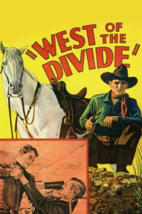

Country:United States, 54 minutes
Spoken languages:English
Genres:Action, Western
Director(s):Robert N. Bradbury
Writer(s):Robert N. Bradbury
Video Codec:Unknown
Number: 196


Certification:
Storyline:
Ted Hayden impersonates a wanted man and joins Gentry's gang only to learn later that Gentry was the one who killed his father.
Cast:


Medium: VHS tape,
Comments: Part of: John Wayne Western Collection Volume III
Loaned: No
Aspect ratio: Unknown